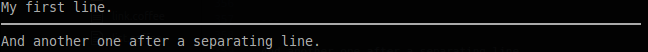
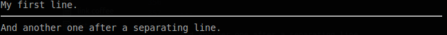
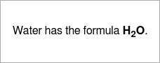
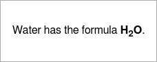
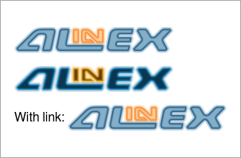
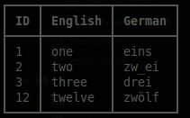
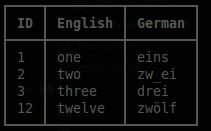
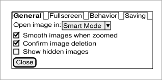

This report module should help you create complex reports in an easy way. You create a new object and append different text objects step by step. At last you may access the markdown text or get it converted to HTML.
The key features are:
- easy markdown writing
- feature rich markdown
- export as text, console, html (also optimized for email), pdf, png or jpg
- convert text to visual representation like qr, chart or UML
- optimized interactive tables
See example output within the different element descriptions below.
Internally this works with a markdown syntax which has a limited number of possibilities but is easy to transform in nearly any other format. If you know markdown you will find the possibilities here enormous. And you may also directly load markdown and process it using this package.
The html export can also be optimized for email using ìnlineCss option. With
this the styles from the head section will moved into the document because
webmail client will remove the head section completely. Only for javascript there
is no possible replacement.
It is one of the modules of the Alinex Universe following the code standards defined in the General Docs.


The easiest way is to let npm add the module directly to your modules (from within you node modules directory):
npm install alinex-report --save
And update it to the latest version later:
npm update alinex-report --save
This package will install a lot of subpackages to ensure the full functionality but only the ones really needed are loaded on demand.
Always have a look at the latest changes.
The first step is to load the module:
Report = require 'alinex-report'
And now you create a new object:
report = new Report()
You may also give some of the following options:
source- markdown text to preloadlog- a function called each time something is added with the added textwidth- the width for line breaks (default: 80)
The report builder is a collection of methods used to easily create the needed markup. They often are handy to convert your objects into formatted text:
report.h1 "My Test"
report.p "This is a short demonstrative test with:"
report.list [
"headings"
"text blocks"
"unnumbered lists"
]
And finally get the complete result:
console.log report # same as report.toString()
text = report.toString() # markdown syntax
html = report.toHtml() # html
log = report.toConsole() # text with ansi colors
Instead of creating a report to collect everything, you can also let this module convert single elements on the fly:
console.log Report.ul ['one', 'two', 'three']
console.log Report.p "This text contains a #{Result.b 'bold'} word."
If you want to only convert existing markdown into html do this like:
html = new Report({source: markdownText}).toHtml()
To mask some characters to be not interpreted as markdown, you may use \ before
the special markdown signs or automatically mask them using Report.mask text
if you didn't want to interpret them as markdown.
The report builder is a collection of methods used to easily create the needed
markup. They often are handy to convert your objects into formatted text. In
contrast you may define the markup by yourself (see below) and use the raw()
method to add it.
Often the text output will look like the markdown and the console output sometimes, too.
Settings to be done before using the reporter:
# globally
Report.width = 80
# only for instance
report = new Report()
report.width = 80
This setting will define the maximum line length (default is 80 characters). All methods which use it have the ability to overwrite this default setting with an individual number.
You may also set the width on the instance instead of globally giving it as a parameter to the constructor. See the usage above.
Use the methods h1 to h6 to create headings in the given level:
report = new Report()
report.h1 'My Title'
report.h2 'Subheading with specific width', 120
In the headings level 1 and 2 it is possible to give a width for the line length as shown above.
h1 Heading
==========================================================================
h2 Heading
--------------------------------------------------------------------------
### h3 Heading
#### h4 Heading
##### h5 Heading
###### h6 Heading
With the default style this should look like:


Alternatively the first two levels may also defined as:
# h1 Heading
## h2 Heading
This allows the following types:
- p - add a text paragraph
- quote - add quoted text multiple level depth (second parameter)
- code - add a code block (language as additional parameter)
Use it for a normal text paragraph.
report.p 'A new paragraph.'
report.p 'A long text may be automatically broken into multiple lines.', 40
report.p 'And here comes a fixed\n linebreak.\n\nWith a second paragraph.'
You may give the line length for markdown as optional second parameter.
This goes into html as:
A new paragraph.
A long text may be automatically broken
into multiple lines.
And here comes a fixed\
linebreak.
With a second paragraph.
In markdown you write your text directly, line breaks will not be held but made like needed. An empty line starts a new paragraph but if you need a line break on a specific position use a slash at the end.
And renders in HTML as:

Quoted text is used if you show another opinion and it may also be multiple level deep. It is like used in emails.
report.quote 'My home is my castle!'
report.quote "I would like to visit a castle in north scotland, next year.", 2, 40
Parameters:
- (string) text for thee quote
- (integer) depth level 1.. (default: 1)
- (integer) max width in markdown
You may give the quoting depth as second parameter and maybe the line length for markdown as third parameter.
> My home is my castle!
> > I would like to visit a castle in
> > north scotland, next year.
An alternative format is:
> Blockquotes can also be nested...
>> ...by using additional greater-than signs right next to each other...
> > > ...or with spaces between arrows.
And renders as HTML:


This is used for any text which you didn't have a specific language but should alsobe displayed as a preformatted block.
report.code 'This is a text code block.\nIt should be kept as is.'
In the markdown this is represented with a block of at leasr three back quotes:
This is a text code block.
It should be kept as is.
And renders as HTML:

To display some code you can create a paragraph with syntax highlighting (only HTML) in languages like:
- code like: bash, coffee, js, sh, sql
- data like: json, yaml
- documents like: handlebars, markdown
See highlight.js for all possible languages to use.
report.code 'var x = Math.round(f);', 'js'
report.code 'This **is** a ==markdown== text', 'markdown'
report.code 'simple:\n list: [a, b, 5]', 'yaml'
In the markdown this is represented with a block of at leasr three back quotes followed by the language to use:
``` js
var x = Math.round(f);
```
``` markdown
This **is** a ==markdown== text
```
``` yaml
simple:
list: ["a", b, 5]
```
And renders as HTML:

A horizontal line may be used as seperation between text blocks.
report.p "My first line."
report.hr()
report.p "And another one after a separating line."
In the markdown this will be displayed with at least three dashes as a line:
My first line.
---
And another one after a separating line.
Alternatively you may use at least 3 or more undescores ___ or asterisk ***
characters as a line.
And renders as HTML:
 

The following code makes a colored box around a markup text which may contain any other markup. As second parameter the type of the box needs to be given which is one of: 'detail', 'info', 'warning', 'alert'
report.box "Some more details here...", 'detail'
report.box "A short note.", 'info'
report.box "This is important!", 'warning'
report.box "Something went wrong!", 'alert'
An additional width parameter may also be given to set the display width in markdown.
In the markdown this is defined using driple colons as start and end with the box type behind the start mark:
::: detail
Some more details here...
:::
::: info
A short note.
:::
::: warning
This is important!
:::
::: alert
Something went wrong!
:::
And renders as HTML or console output:


Three types of lists are supported:
- ul - unordered list from array
- ol - ordered list from array
- dl - definition list from object
All this lists allow for alphanumeric sorting. Give true as second parameter or
false for reverse sorting but keep in mind that this is only working correctly
in straight lists (not sublists).
Also an additional width parameter for the markdown display width may be given as
third paramter.
This will create a list with bullets.
report.ul [
'one'
'two'
"and this is a long text because i can't only write numbers
down here to show the proper use of the lists also with long text lines" 'last\ntwo lines'
report.hr()
report.ul [
'one'
'two'
['subline', 'and more']
'three'
]
In the markdown the same list is defined as:
- one
- two
- and this is a long text because i can't only write numbers down here to show
the proper use of the lists also with long text lines
- last\
two lines
---
- one
- two
- and more
- subline
- three
Alternatively *, + or - may also be used as list symbols, also in mixed
format.
+ Create a list by starting a line with `+`, `-`, or `*`
+ Sub-lists are made by indenting 2 spaces:
- Marker character change forces new list start:
* Ac tristique libero volutpat at
+ Facilisis in pretium nisl aliquet
- Nulla volutpat aliquam velit
+ Very easy!
And renders as HTML:


This will create a numbered list.
report.ol [
'one'
'two'
"and this is a long text because i can't only write numbers
down here to show the proper use of the lists also with long text lines" 'last\ntwo lines'
report.hr()
report.ol [
'one'
'two'
['subline', 'and more']
'three'
]
In the markdown the same list is defined as:
1. one
2. two
3. and this is a long text because i can't only write numbers down here to show
the proper use of the lists also with long text lines
4. last\
two lines
---
1. one
2. two
1. and more
2. subline
3. three
It doesn't matter if you give the same number multiple times, only the first number's value is used to start numbering. To start at a specific number start with it:
1. You can use sequential numbers...
1. ...or keep all the numbers as `1.`
Start numbering with offset:
57. foo
1. bar
And renders as HTML:


This will display some phrases as list entries with their contents.
report.dl
html: 'Markup language for internet pages'
css: 'Style language to bring the layout into html'
, true
Like seen in the example the sorting may be set to true.
In the markdown the same list is defined as:
css
: Style language to bring the layout into html
html
: Markup language for internet pages
In the markdown you may also use:
Term 1
: Definition 1
with lazy continuation.
Term 2 with *inline markup*
: Definition 2
Second paragraph of definition 2.
Compact style:
Term 1
~ Definition 1
Term 2
~ Definition 2a
~ Definition 2b
And renders as HTML:


A check list in which each row maybe done or not.
report.check
'todo list': true
'with elements done': true
'and something todo': false
The values in the given map defines if they are done or not.
As markdown this is written as:
[x] todo list
[x] with elements done
[ ] and something todo
And renders as HTML and console output:


These are only available on static calls not on a report instance! But you may add them into another instance method.
- b - bold like
__bold__ - i - italic like
_italic_ - del - delete like
~~delete~~ - sub - subscript like
~subscript~ - sup - superscript like
^superscript^ - tt - typewriter like `typewriter`
- mark - marked text like highlighted with an text marker like
==marked==
report.p "This should show as #{Report.b "bold"} format."
report.p "This should show as #{Report.i "italic"} format."
report.p "This should show as #{Report.del "strikethrough"} format."
report.p "This should show as #{Report.tt "typewriter"} format."
report.p "This should show as #{Report.sub "subscript"} format."
report.p "This should show as #{Report.sup "superscript"} format."
report.p "This should show as #{Report.mark "highlight"} format."
You may also combine this calls feeding one result into the other method:
report.p "Water has the formula " + Report.b("H#{Report.sub 2}O") + " *v* ."
The markdown will look like:
This should show as __bold__ format.
This should show as _italic_ format.
This should show as ~~strikethrough~~ format.
This should show as `typewriter` format.
This should show as ~subscript~ format.
This should show as ^superscript^ format.
This should show as ==highlight== format.
As an alternative syntax you may use *italic* or **bold** for this formats, too.
The complex example from above will look like:
Water has the formula __H~2~O__.
And renders as HTML:
 

And also in console some formats are interpreted:
If you add a link you can give the full url in the text or add the link as an inline element with:
- link text
- url
- title text shown as tooltip in html (optional)
report.p "Autoconverted link to http://alinex.github.io"
link = Report.a 'google', 'http://google.com', 'Open Google Search'
report.p "Have a look at #{link}"
As markdown the link text goes into square brackets, the url in brackets with the optional title text in quotes within:
Autoconverted link to http://alinex.github.io
Have a look at [google](http://google.com "Open Google Search")
And renders as HTML:

Console and text output will be the same as markdown.
Images may be added nearly the same way as links. The parameters are:
- alternative text
- url
- title text shown as tooltip in html (optional)
report.p Report.img 'Alinex', 'https://alinex.github.io/images/Alinex-200.png'
report.p Report.img 'Alinex Black', 'https://alinex.github.io/images/Alinex-black-200.png', "The Alinex Logo"
image = Report.img 'Alinex', 'https://alinex.github.io/images/Alinex-200.png'
report.p "With link: " + Report.a image, 'http://alinex.github.com'
The markdown also looks the same as for links with an exclamation mark before:


With link:
[](http://alinex.github.com)
With a link the image goes into the square brackets of the link text.
And renders as HTML and console output:
 
The text conversion is the same as conspole output.
You may also include some special signs.
report.h3 "classic typographs: "
report.ul [
"copyright: (c) (C)"
"registeres: (r) (R) "
"trademark: (tm) (TM) "
"paragraph: (p) (P) "
"math: +-"
]
### classic typographs
- copyright: (c) (C)
- registeres: (r) (R)
- trademark: (tm) (TM)
- paragraph: (p) (P)
- math: +-
And renders as HTML and console output:


report.h3 "emoji:"
report.ul [
"""angry: :angry: >:( >:-("""
"""blush: :blush: :") :-")"""
"""broken_heart: :broken_heart: </3 <\\3"""
"""confused: :confused: :/ :-/"""
"""cry: :cry: :,( :,-("""
"""frowning: :frowning: :( :-("""
"""heart: :heart: <3"""
"""imp: :imp: ]:( ]:-("""
"""innocent: :innocent: o:) O:) o:-) O:-) 0:) 0:-)"""
"""joy: :joy: :,) :,-) :,D :,-D"""
"""kissing: :kissing: :* :-*"""
"""laughing: :laughing: x-) X-)"""
"""neutral_face: :neutral_face: :| :-|"""
"""open_mouth: :open_mouth: :o :-o :O :-O"""
"""rage: :rage: :@ :-@"""
"""smile: :smile: :D :-D"""
"""smiley: :smiley: :) :-)"""
"""smiling_imp: :smiling_imp: ]:) ]:-)"""
"""sob: :sob: ;( ;-("""
"""stuck_out_tongue: :stuck_out_tongue: :P :-P"""
"""sunglasses: :sunglasses: 8-) B-)"""
"""sweat: :sweat: ,:( ,:-("""
"""sweat_smile: :sweat_smile: ,:) ,:-)"""
"""unamused: :unamused: :s :-S :z :-Z :$ :-$"""
"""wink: :wink: ;) ;-)"""
]
### emoji:
- angry: :angry: >:( >:-(
- blush: :blush: :") :-")
- broken_heart: :broken_heart: </3 <\3
- confused: :confused: :/ :-/
- cry: :cry: :,( :,-(
- frowning: :frowning: :( :-(
- heart: :heart: <3
- imp: :imp: ]:( ]:-(
- innocent: :innocent: o:) O:) o:-) O:-) 0:)
0:-)
- joy: :joy: :,) :,-) :,D :,-D
- kissing: :kissing: :* :-*
- laughing: :laughing: x-) X-)
- neutral_face: :neutral_face: :| :-|
- open_mouth: :open_mouth: :o :-o :O :-O
- rage: :rage: :@ :-@
- smile: :smile: :D :-D
- smiley: :smiley: :) :-)
- smiling_imp: :smiling_imp: ]:) ]:-)
- sob: :sob: ;( ;-(
- stuck_out_tongue: :stuck_out_tongue: :P :-P
- sunglasses: :sunglasses: 8-) B-)
- sweat: :sweat: ,:( ,:-(
- sweat_smile: :sweat_smile: ,:) ,:-)
- unamused: :unamused: :s :-S :z :-Z :$
:-$
- wink: :wink: ;) ;-)
And renders as HTML:

Text and console output are the same as the markdown.
Font Awesome gives you scalable vector icons that can instantly be customized — size, color, drop shadow, and anything that can be done with the power of CSS. You can use all the icons from FontAwesome to add to your markup (html only):
report.h3 "fontawesome:"
report.p "basic icons: :fa-flag: :fa-camera-retro:"
report.p "larger icons: :fa-camera-retro fa-lg: :fa-camera-retro fa-2x: :fa-camera-retro fa-3x:"
report.p "fixed width: :fa-home fa-fw: :fa-pencil fa-fw:"
report.ul [
"<!-- {ul:.fa-ul}-->"
"list symbols: :fa-li fa-check-square:"
]
report.p ":fa-quote-left fa-3x fa-pull-left fa-border:
...tomorrow we will run faster, stretch out our arms farther...
And then one fine morning— So we beat on, boats against the
current, borne back ceaselessly into the past."
report.p "animated icons: :fa-spinner fa-spin fa-2x fa-fw:
:fa-circle-o-notch fa-spin fa-2x fa-fw:
:fa-refresh fa-spin fa-2x fa-fw:
:fa-cog fa-spin fa-2x fa-fw:
:fa-spinner fa-pulse fa-2x fa-fw:"
report.p "flipped and rotated: :fa-shield: normal
:fa-shield fa-rotate-90: fa-rotate-90
:fa-shield fa-rotate-180: fa-rotate-180
:fa-shield fa-rotate-270: fa-rotate-270
:fa-shield fa-flip-horizontal: fa-flip-horizontal
:fa-shield fa-flip-vertical: fa-flip-vertical"
report.p "stacked icons:
:fa-stack fa-lg fa-stack-2x fa-square-o fa-stack-1x fa-twitter:
:fa-stack fa-lg fa-stack-2x fa-circle fa-stack-1x fa-flag fa-inverse:
:fa-stack fa-lg fa-stack-2x fa-square fa-stack-1x fa-terminal fa-inverse:
:fa-stack fa-lg fa-stack-1x fa-camera fa-stack-2x fa-ban text-danger:"
-
Basic Icons
You can place Font Awesome icons just about anywhere as inline text using the icon's name. The icon size and color will match the surrounding text paragraph.
- Colors
Use the classes
text-red,text-green,text-yellow,text-blue,text-magenta,text-cyanortext-grayto change the colors. -
Larger Icons
To increase icon sizes relative to their container, use the
fa-lg(33% increase),fa-2x,fa-3x,fa-4x, orfa-5xclasses. -
Fixed Width
Use
fa-fwto set icons at a fixed width. Great to use when different icon widths throw off alignment. Especially useful in things like lists. -
List Icons
Use
fa-ulandfa-lito easily replace default bullets in unordered lists. -
Bordered Icons
Use
fa-borderandfa-pull-rightorfa-pull-leftfor easy pull quotes or article icons. -
Animated Icons
Use the
fa-spinclass to get any icon to rotate, and usefa-pulseto have it rotate with 8 steps. Works well withfa-spinner,fa-refreshandfa-cog. -
Flipped and Rotated
To arbitrarily rotate and flip icons, use the
fa-rotate-*andfa-flip-*classes. -
Stacked Icons
To stack multiple icons, use the
fa-stack-1xas start for the regularly sized icon, andfa-stack-2xfor the larger icon and the icon itself with it's manipulations likefa-inversebehind.
### fontawesome:
__basic icons:__ :fa-flag: :fa-camera-retro:
__larger icons:__ :fa-camera-retro fa-lg: :fa-camera-retro fa-2x:
:fa-camera-retro fa-3x:
__fixed width:__ :fa-home fa-fw: :fa-pencil fa-fw:
- <!-- {ul:.fa-ul}-->
- __list symbols:__ :fa-li fa-check-square:
:fa-quote-left fa-3x fa-pull-left fa-border: __border icons:__ ...tomorrow we
will run faster, stretch out our arms farther... And then one fine morning— So
we beat on, boats against the current, borne back ceaselessly into the past.
__animated icons:__ :fa-spinner fa-spin fa-2x fa-fw: :fa-circle-o-notch
fa-spin fa-2x fa-fw: :fa-refresh fa-spin fa-2x fa-fw: :fa-cog fa-spin fa-2x
fa-fw: :fa-spinner fa-pulse fa-2x fa-fw:
__flipped and rotated:__ :fa-shield: normal :fa-shield fa-rotate-90:
fa-rotate-90 :fa-shield fa-rotate-180: fa-rotate-180 :fa-shield fa-rotate-270:
fa-rotate-270 :fa-shield fa-flip-horizontal: fa-flip-horizontal :fa-shield
fa-flip-vertical: fa-flip-vertical
__stacked icons:__ :fa-lg fa-stack-2x fa-square-o fa-stack-1x fa-twitter: :fa-lg
fa-stack-2x fa-circle fa-stack-1x fa-flag fa-inverse: :fa-lg fa-stack-2x
fa-square fa-stack-1x fa-terminal fa-inverse: :fa-lg fa-stack-1x fa-camera
fa-stack-2x fa-ban text-red:
And renders as HTML and console output:


In text and console output only the icons are kept in a compressed format. All modulations are removed.
Output a table (data object and optional column object needed). This can be called with different kind of objects making it easy to use nearly everything you have.
Syntax: report.table <object>, <columns>, <sort>, <mask>
The complexest format will be shown at first:
<object> : a list of row maps like returned from a database
<columns> : a map of column id to use as columns with the options:
- title - heading text
- align - orientation (one of 'left', 'center', 'right')
- width - the minimum width of the column (optional)
<sort> : a map of sort conditions defining the column id and order ('asc', 'desc')
<mask> : (boolean) use Report.mask() on each field value
All other formats will be converted into this filling missing information with default values. You may also use the table format which can include the column settings and often is already sorted.
There are lots of ways to use this.
Simple conversion
table = new Table [
['ID', 'English', 'German']
[1, 'one', 'eins']
[2, 'two', 'zw_ei']
[3, 'three', 'drei']
[12, 'twelve', 'zwölf']
]
report = new Report()
report.table table
| ID | English | German |
|:-- |:------- |:------ |
| 1 | one | eins |
| 2 | two | zw_ei |
| 3 | three | drei |
| 12 | twelve | zwölf |
And renders as HTML and console output:
 

With align settings
table = new Table [
['ID', 'English', 'German']
[1, 'one', 'eins']
[2, 'two', 'zw_ei']
[3, 'three', 'drei']
[12, 'twelve', 'zwölf']
]
table.style null, 'ID', {align: 'right'}
report = new Report()
report.table table
| ID | English | German |
| --:|:------- |:------ |
| 1 | one | eins |
| 2 | two | zw_ei |
| 3 | three | drei |
| 12 | twelve | zwölf |
And renders as HTML and console output:


With mask settings
table = new Table [
['ID', 'English', 'German']
[1, 'one', 'eins']
[2, 'two', 'zw_ei']
[3, 'three', 'drei']
[12, 'twelve', 'zwölf']
]
report = new Report()
report.table table, null, null, true
| ID | English | German |
|:-- |:------- |:------ |
| 1 | one | eins |
| 2 | two | zw\_ei |
| 3 | three | drei |
| 12 | twelve | zwölf |
And renders as HTML:

table = [
{id: 1, en: 'one', de: 'eins'}
{id: 2, en: 'two', de: 'zwei'}
{id: 3, en: 'three', de: 'drei'}
{id: 12, en: 'twelve', de: 'zwölf'}
]
report = new Report()
report.table table
| id | en | de |
|:-- |:------ |:----- |
| 1 | one | eins |
| 2 | two | zwei |
| 3 | three | drei |
| 12 | twelve | zwölf |
And renders as HTML and console output:

Using column map-map
table = [
{id: 1, en: 'one', de: 'eins'}
{id: 2, en: 'two', de: 'zwei'}
{id: 3, en: 'three', de: 'drei'}
{id: 12, en: 'twelve', de: 'zwölf'}
]
columns =
id:
title: 'ID'
align: 'right'
de:
title: 'German'
en:
title: 'English'
report = new Report()
report.table table, columns
| ID | German | English |
| --:|:------ |:------- |
| 1 | eins | one |
| 2 | zwei | two |
| 3 | drei | three |
| 12 | zwölf | twelve |
And renders as HTML and console output:


Using column list-map
table = [
{id: 1, en: 'one', de: 'eins'}
{id: 2, en: 'two', de: 'zwei'}
{id: 3, en: 'three', de: 'drei'}
{id: 12, en: 'twelve', de: 'zwölf'}
]
columns = [
['id', 'en']
['ID', 'English']
]
report = new Report()
report.table table, columns
| ID | English |
|:-- |:------- |
| 1 | one |
| 2 | two |
| 3 | three |
| 12 | twelve |
And renders as HTML:

Using column list
table = [
{id: 1, en: 'one', de: 'eins'}
{id: 2, en: 'two', de: 'zwei'}
{id: 3, en: 'three', de: 'drei'}
{id: 12, en: 'twelve', de: 'zwölf'}
]
columns = ['ID', 'English', 'German']
report = new Report()
report.table table, columns
| ID | English | German |
|:-- |:------- |:------ |
| 1 | one | eins |
| 2 | two | zwei |
| 3 | three | drei |
| 12 | twelve | zwölf |
And renders as HTML:

Using column map
table = [
{id: 1, en: 'one', de: 'eins'}
{id: 2, en: 'two', de: 'zwei'}
{id: 3, en: 'three', de: 'drei'}
{id: 12, en: 'twelve', de: 'zwölf'}
]
columns =
id: 'ID'
en: 'English'
report = new Report()
report.table table, columns
| ID | English |
|:-- |:------- |
| 1 | one |
| 2 | two |
| 3 | three |
| 12 | twelve |
And renders as HTML:

Using sort map
table = [
{id: 1, en: 'one', de: 'eins'}
{id: 2, en: 'two', de: 'zwei'}
{id: 3, en: 'three', de: 'drei'}
{id: 12, en: 'twelve', de: 'zwölf'}
]
columns =
id:
title: 'ID'
align: 'right'
de:
title: 'German'
en:
title: 'English'
sort = {de: 'desc'}
report = new Report()
report.table table, columns, sort
| ID | German | English |
| --:|:------ |:------- |
| 12 | zwölf | twelve |
| 2 | zwei | two |
| 1 | eins | one |
| 3 | drei | three |
And renders as HTML:

Using sort list
table = [
{id: 1, en: 'one', de: 'eins'}
{id: 2, en: 'two', de: 'zwei'}
{id: 3, en: 'three', de: 'drei'}
{id: 12, en: 'twelve', de: 'zwölf'}
]
columns =
id:
title: 'ID'
align: 'right'
de:
title: 'German'
en:
title: 'English'
sort = ['de']
report = new Report()
report.table table, columns, sort
| ID | German | English |
| --:|:------ |:------- |
| 3 | drei | three |
| 1 | eins | one |
| 2 | zwei | two |
| 12 | zwölf | twelve |
And renders as HTM:

Using sort key
table = [
{id: 1, en: 'one', de: 'eins'}
{id: 2, en: 'two', de: 'zwei'}
{id: 3, en: 'three', de: 'drei'}
{id: 12, en: 'twelve', de: 'zwölf'}
]
columns =
id:
title: 'ID'
align: 'right'
de:
title: 'German'
en:
title: 'English'
sort = 'de'
report = new Report()
report.table table, columns, sort
| ID | German | English |
| --:|:------ |:------- |
| 3 | drei | three |
| 1 | eins | one |
| 2 | zwei | two |
| 12 | zwölf | twelve |
And renders as HTML:

table = [
[1, 'one', 'eins']
[2, 'two', 'zwei']
[3, 'three', 'drei']
[12, 'twelve', 'zwölf']
]
report = new Report()
report.table table
| 1 | one | eins |
|:-- |:------ |:----- |
| 2 | two | zwei |
| 3 | three | drei |
| 12 | twelve | zwölf |
And renders as HTML:

Using column list
table = [
[1, 'one', 'eins']
[2, 'two', 'zwei']
[3, 'three', 'drei']
[12, 'twelve', 'zwölf']
]
columns = ['ID', 'English', 'German']
report = new Report()
report.table table, columns
| ID | English | German |
|:-- |:------- |:------ |
| 1 | one | eins |
| 2 | two | zwei |
| 3 | three | drei |
| 12 | twelve | zwölf |
And renders as HTML:

Using column list-array
table = [
[1, 'one', 'eins']
[2, 'two', 'zwei']
[3, 'three', 'drei']
[12, 'twelve', 'zwölf']
]
columns = [
[0, 1]
['ID', 'English']
]
report = new Report()
report.table table, columns
| ID | English |
|:-- |:------- |
| 1 | one |
| 2 | two |
| 3 | three |
| 12 | twelve |
And renders as HTML:

Using column list-map
table = [
[1, 'one', 'eins']
[2, 'two', 'zwei']
[3, 'three', 'drei']
[12, 'twelve', 'zwölf']
]
columns = [
title: 'ID'
align: 'right'
,
title: 'English'
,
title: 'German'
]
report = new Report()
report.table table, columns
| ID | English | German |
| --:|:------- |:------ |
| 1 | one | eins |
| 2 | two | zwei |
| 3 | three | drei |
| 12 | twelve | zwölf |
And renders as HTML:

With empty fields
table = [
[1, 'one', 'eins']
[2, '', 'zwei']
[3, null, 'drei']
[12, undefined, 'zwölf']
]
report = new Report()
report.table table
| 1 | one | eins |
|:-- |:--- |:----- |
| 2 | | zwei |
| 3 | | drei |
| 12 | | zwölf |
And renders as HTML:

table =
id: '001'
name: 'alex'
position: 'developer'
report = new Report()
report.table table
| Name | Value |
|:-------- |:--------- |
| id | 001 |
| name | alex |
| position | developer |
And renders as HTML:

Using volumn list
table =
id: '001'
name: 'alex'
position: 'developer'
report = new Report()
report.table table
| NAME | VALUE |
|:-------- |:--------- |
| id | 001 |
| name | alex |
| position | developer |
And renders as HTML:

With list and object content
table =
number: [1..8]
name: 'alex'
data:
type: 'developer'
lang: 'javascript'
report = new Report()
report.table table
| Name | Value |
|:--------- |:---------------------- |
| number | 1, 2, 3, 4, 5, 6, 7, 8 |
| name | alex |
| data.type | developer |
| data.lang | javascript |
And renders as HTML:

Instead of simple tables for the HTML output they may be made interactive, allowing:
- sorting
- filtering
- paging
All these may be done by the user. But if such tables are outputted to other format they will only show a normal table. It is also not possible to run this in most mail clients (only if attached and opened in Browser).
report = new Report()
report.datatable new Table([
['ID', 'English', 'German']
[1, 'one', 'eins']
[2, 'two', 'zw_ei']
[3, 'three', 'drei']
[12, 'twelve', 'zwölf']
])
The possible options to give as second parameter are documented at the jQuery datatable. The default will disable paging, search and info.
As markdown this will be written as three separate elements working together:
| ID | English | German |
|:-- |:------- |:------ |
| 1 | one | eins |
| 2 | two | zw_ei |
| 3 | three | drei |
| 12 | twelve | zwölf |
<!-- {table:#datatable1} -->
$$$ js
$(document).ready(function () {
$('#datatable1').DataTable({
"paging": false,
"info": false
});
});
$$$
And finally in HTML this will look like (click to show working HTML):

Features
In this example a lot of features are activated:
- info - (boolean) show information about the table including information about filtered data (default: false, true in markdown)
- paging - (boolean) set to true to enable paging of data (default: false, true in markdown)
- lengthChange - (boolean) control the end user's ability to change the paging display length of the table if paging is enabled (default: true)
- ordering - (boolean) control ordering/sorting abilities in table (default: true)
- searching - (boolean) control search/filtering abilities (default: false, true in markdown)
- scrollX - (boolean) enable horizontal scrolling if necessary for viewport
- scrollY - (boolean) enable vertical scrolling if necessary for viewport
report = new Report()
report.datatable new Table([
['ID', 'English', 'German']
[1, 'one', 'eins']
[2, 'two', 'zwei']
[3, 'three', 'drei']
[4, 'four', 'vier']
[5, 'five', 'fünf']
[6, 'six', 'sechs']
[7, 'seven', 'sieben']
[8, 'eight', 'acht']
[9, 'nine', 'neun']
[10, 'ten', 'zehn']
[11, 'eleven', 'elf']
[12, 'twelve', 'zwölf']
]),
info: true
paging: true
searching: true
As markdown this will be written as follows:
| ID | English | German |
|:-- |:------- |:------ |
| 1 | one | eins |
| 2 | two | zwei |
| 3 | three | drei |
| 4 | four | vier |
| 5 | five | fünf |
| 6 | six | sechs |
| 7 | seven | sieben |
| 8 | eight | acht |
| 9 | nine | neun |
| 10 | ten | zehn |
| 11 | eleven | elf |
| 12 | twelve | zwölf |
<!-- {table:#datatable1} -->
$$$ js
$(document).ready(function () {
$('#datatable1').DataTable({
"info": true,
"paging": true,
"searching": true
});
});
$$$
And finally in HTML this will look like (click to show working HTML):

These elements willl add some functionality to the overall document.
This will add a table of contents as quicklink list to the resulting html document. It will be removed on text and console output.
report = new Report()
report.toc()
report.h1 'Table of Contents Test'
report.h2 'My text'
report.p 'Something I have to say...'
report.h2 'Other opinions'
report.h3 'My parents'
report.p "You don't want to know."
report.h3 "My friends"
report.p 'They always support me.'
This will list all headings starting at level 2 in the quicklink list. The first level headings are meant as document heading and therefore won't be listed in the table.
In the markdown, all you have to do is add a @[toc] line there it should be added:
@[toc]
Table of Contents Test
================================================================================
My text
--------------------------------------------------------------------------------
Something I have to say...
Other opinions
--------------------------------------------------------------------------------
### My parents
You don't want to know.
### My friends
They always support me.
And renders as HTML you will find it on the right side (in the default style):

Add an abbreviation entry (before use in the text):
report = new Report()
report.abbr 'HTTP', 'Hyper Text Transfer Protocol'
report.p "The HTTP protocol is used for transferring web content. A secured
version of HTTP called HTTPS is also available."
The HTTP protocol is used for transferring web content. A secured version of
HTTP called HTTPS is also available.
*[HTTP]: Hyper Text Transfer Protocol
This will mark the words in the HTML text and add the definition as tooltip to it:

You may use footnotes within the document:
report = new Report()
cern = report.footnote "European Organization for Nuclear Research\n\nSee more info at http://home.cern"
me = report.footnote "Alexander Schilling", 'a'
other = report.footnote "My colleagues as the University of Tübingen", 'b'
report.p "The World Wide Web (WWW) is invented by CERN#{cern}. But I#{me} and
prometheus#{other} used it to make a medical learning environment out of it.
_Alex#{me}_"
Each time one of the footnotes added to the text only a reference (number or free defined) is added and the contents of all footnotes are collected at the end of the document.
In the markdown the same reference (number or name) can be used multiple times to reference the same footnote.
The World Wide Web (WWW) is invented by CERN[^1]. But I[^a] and prometheus[^b]
used it to make a medical learning environment out of it. _Alex[^a]_
[^1]: European Organization for Nuclear Research
See more info at http://home.cern
[^a]: Alexander Schilling
[^b]: My colleagues as the University of Tübingen
And rendered as HTML links will be added in the text and backlinks from the footnotes.:

This are settings which only influence html output and the formats depending on it (pdf, images).
You can also give some specific styles (only) for the HTML output. This may overwrite all default settings:
report = new Report()
report.p "Make this centered (using class)..." + Report.style '.center'
report.p "Make this centered and red (using classes)..." + Report.style '.center.red'
report.p "Set an id and class..." + Report.style '#top .hide'
report.p "Set an specific attriubute" + Report.img('google', 'https://www.google.de/images/branding\
/googlelogo/2x/googlelogo_color_272x92dp.png') + Report.style 'width=20'
As seen above it may also be used as instance method, which will add it at the end or as class method to insert also inline.
Annotations will apply itself to the deepest element preceding it. But you may
To make it apply to a different element, precede your annotations with the tag name
followed by a :.
To go back to previous parent with the same name, add '^n' after the tag name, where
'n' is how many levels deep to go back to.
The following classes may be used:
| STYLE | RESULT |
|---|---|
| .text-red | color: red |
| .text-green | color: green |
| .text-yellow | color: yellow |
| .text-blue | color: blue |
| .text-magenta | color: magenta |
| .text-cyan | color: cyan |
| .text-gray | color: gray |
| .bg-white | background-color: white |
| .center | text-align: center |
| .left | float: left |
| .right | float: right |
| .hide | display: none |
| .spacing | padding: 10px |
In the markdown it is notated within an html comment:
Set float\
left and id...<!-- {#left .left} -->
Make this centered (using class)...<!-- {.center} -->
Make this centered and red (using classes)...
<!-- {.center.text-red} -->
Set image width

<!-- {width=60} -->
> * [Continue](#continue)
<!-- {a:.text-green} -->
<!-- {li:.text-red} -->
<!-- {blockquote:.right} -->
line 1
line 2
line 3
line 4
line 5
<!-- {p^3:.text-green} -->
And rendered as HTML:

This will add or overwrite the page style rules. You may also add other rules which you later call using the above direct style calls:
report = new Report()
report.css "#box {padding: 3px; border: solid black 1px; background: #eee;}
strong {color: red;}"
report.p "This document uses **style sheets** to make look bold text be red and
let some look like **buttons** using direct style for setting."
report.style '#box'
You can put everything into the css rules which goes into cascading style sheets.
In the markdown this goes into an execution tag:
$$$ css
#box {padding: 3px; border: solid black 1px; background: #eee;} strong {color: red;}
$$$
This document uses **style sheets** to make look bold text be red and let some
look like **buttons** using direct style for setting.
<!-- {#box} -->
The example above will lokk like (rendered as HTML):

Like styles you may also add javascript functions to the document.
report = new Report()
report.js "test = function() { alert('Hello World!')}"
report.p "Call the [demo](#) which is included into the page."
report.style 'onclick="test()"'
If you use jQuery it will be added to your document automatically.
In the markdown this goes into an execution tag:
$$$ js
test = function() { alert('Hello World!')}
$$$
Call the [demo](#) which is included into the page.
<!-- {onclick="test()"} -->
The example above will lokk like (click to get working HTML):
You may also add any tag to the HTML head section using:
report = new Report()
report.header '<script type="text/javascript" src="http://myserver.com/my-lib.js"></script>'
This will add the script tag to the head section of the resulting HTML.
This will only work in HTML format, else the definition is displayed.
QR Codes are used to pack some information into a scanable 2D Object.
Simple Code
You only need to give the content like an URL:
report = new Report()
report.qr "http://alinex.de"
This will be written in markdown as:
$$$ qr
http://alinex.de
$$$
And finally in HTML and text or console output:

QR Extended
You may also define how to make the code image:
report = new Report()
report.qr
content: 'http://alinex.github.io'
padding: 1
width: 500
height: 500
color: '#ff0000'
background: '#ffffff'
ecl: 'M'
$$$ qr
content: 'http://alinex.github.io'
padding: 1
width: 500
height: 500
color: '#ff0000'
background: '#ffffff'
ecl: M
$$$
And finally in HTML and text or console output:


A lot of charts are possible based on jui-chart. You'll find all possible settings there or look at some of the examples below.
report = new Report()
report.chart null, [
['quarter', 'sales', 'profit']
["1Q", 50, 35]
["2Q", 20, 100]
["3Q", 10, 5]
["4Q", 30, 25]
]
This makes a simple bar chart with predefined settings for your data. But you may also specify a lot of options and charts. The examples below shows the possible settings, but you only need to give some of them.
$$$ chart
| quarter | sales | profit |
|:------- |:----- |:------ |
| 1Q | 50 | 35 |
| 2Q | 20 | 100 |
| 3Q | 10 | 5 |
| 4Q | 30 | 25 |
$$$
This will render in HTML as (click to show in browser):

Bar Chart
report = new Report()
report.chart
width: 400
height: 400
axis:
y:
type: 'block'
domain: 'quarter'
line: 'true'
x:
type: 'range'
domain: 'profit'
line: 'rect' # dashed with gradient
brush: [
type: 'bar'
size: 15
target: ['sales', 'profit']
innerPadding: 10
]
widget: [
type: 'title'
text: 'Bar Chart'
,
type: 'legend'
,
type: 'tooltip'
]
, [
['quarter', 'sales', 'profit']
["2015/Q1", 50, 35]
["2015/Q2", 20, 100]
["2015/Q3", 10, 5]
["2015/Q4", 30, 25]
]
$$$ chart
width: 400
height: 400
axis:
'y':
type: block
domain: quarter
line: 'true'
x:
type: range
domain: profit
line: rect
brush:
- type: bar
size: 15
target:
- sales
- profit
innerPadding: 10
widget:
- type: title
text: Bar Chart
- type: legend
- type: tooltip
| quarter | sales | profit |
|:------- |:----- |:------ |
| 2015/Q1 | 50 | 35 |
| 2015/Q2 | 20 | 100 |
| 2015/Q3 | 10 | 5 |
| 2015/Q4 | 30 | 25 |
$$$
This will render in HTML as (click to show in browser):

3D Bar Chart
report = new Report()
report.chart
width: 400
height: 400
axis:
x:
type: 'range'
domain: 'profit'
step: 5
y:
type: 'block'
domain: 'quarter'
c:
type: 'grid3d'
domain: ['sales', 'profit']
depth: 20
degree: 30
brush: [
type: 'bar3d'
outerPadding: 10
innerPadding: 5
]
widget: [
type: 'title'
text: '3D Bar Chart'
,
type: 'tooltip'
,
type: 'legend'
]
, [
['quarter', 'sales', 'profit']
["2015/Q1", 50, 35]
["2015/Q2", 20, 100]
["2015/Q3", 10, 5]
["2015/Q4", 30, 25]
]
The markdown will contain the settings and the data table like above.
This will render in HTML as (click to show in browser):

Column Chart
report = new Report()
report.chart
width: 400
height: 400
axis:
x:
type: 'block'
domain: 'quarter'
y:
type: 'range'
domain: 'profit'
step: 10
line: true
brush: [
type: 'column'
target: ['sales', 'profit']
,
type: 'focus'
start: 1
end: 1
]
widget: [
type: 'title'
text: 'Column Chart with Focus'
,
type: 'tooltip'
,
type: 'legend'
]
, [
['quarter', 'sales', 'profit']
["2015/Q1", 50, 35]
["2015/Q2", 20, 100]
["2015/Q3", 10, 5]
["2015/Q4", 30, 25]
]
The markdown will contain the settings and the data table like above.
This will render in HTML as (click to show in browser):

3D Column Chart
report = new Report()
report.chart
width: 400
height: 400
axis:
x:
type: 'block'
domain: 'quarter'
y:
type: 'range'
domain: 'profit'
step: 5
c:
type: 'grid3d'
domain: ['sales', 'profit']
depth: 20
degree: 30
brush: [
type: 'column3d'
outerPadding: 10
innerPadding: 5
]
widget: [
type: 'title'
text: '3D Column Chart'
,
type: 'tooltip'
,
type: 'legend'
]
, [
['quarter', 'sales', 'profit']
["2015/Q1", 50, 35]
["2015/Q2", 20, 100]
["2015/Q3", 10, 5]
["2015/Q4", 30, 25]
]
The markdown will contain the settings and the data table like above.
This will render in HTML as (click to show in browser):

Area Chart
report = new Report()
report.chart
width: 400
height: 400
axis:
x:
type: 'fullblock'
domain: 'year'
line: 'solid gradient'
y:
type: 'range'
domain: [-100, 100]
step: 10
line: 'gradient dashed'
brush: [
type: 'area'
symbol: 'curve'
target: ['europe', 'switzerland', 'us']
]
widget: [
type: 'title'
text: 'Area Chart'
,
type: 'legend'
]
, [
['quarter', 'sales', 'profit']
["2015/Q1", 50, 35]
["2015/Q2", 20, 100]
["2015/Q3", 10, 5]
["2015/Q4", 30, 25]
]
The markdown will contain the settings and the data table like above.
This will render in HTML as (click to show in browser):

A language to describe UML diagrams using simple text, which fits perfectly into markdown. See plantuml.com for a complete language description. Some examples will follow:
report = new Report()
report.plantuml "A -> B: Hello"
This sumple sequence diagram will be written into execution tags in markdown like:
$$$ plantuml
A -> B: Hello
$$$
And finally this will render in HTML or text/console as:


Sequence Diagram
report = new Report()
report.plantuml """
participant User
User -> A: DoWork
activate A #FFBBBB
A -> A: Internal call
activate A #DarkSalmon
A -> B: << createRequest >>
activate B
B --> A: RequestCreated
deactivate B
deactivate A
A -> User: Done
deactivate A
"""
The markdown is nearly the same but with $$$ plantuml .... $$$ arround the code.
And this will render in HTML or text/console as:


Use Case Diagram
report = new Report()
report.plantuml """
:Main Admin: as Admin
(Use the application) as (Use)
User -> (Start)
User --> (Use)
Admin ---> (Use)
note right of Admin : This is an example.
note right of (Use)
A note can also
be on several lines
end note
note "This note is connected to several objects." as N2
(Start) .. N2
N2 .. (Use)
"""
The markdown is nearly the same but with $$$ plantuml .... $$$ arround the code.
And in HTML this will look like:

Class Diagram
report = new Report()
report.plantuml """
class Foo1 {
You can use
several lines
..
as you want
and group
==
things together.
__
You can have as many groups
as you want
--
End of class
}
class User {
.. Simple Getter ..
+ getName()
+ getAddress()
.. Some setter ..
+ setName()
__ private data __
int age
-- encrypted --
String password
}
"""
The markdown is nearly the same but with $$$ plantuml .... $$$ arround the code.
And in HTML this will look like:

Activity Diagram (old syntax)
report = new Report()
report.plantuml """
(*) --> "Initialization"
if "Some Test" then
-->[true] "Some Activity"
--> "Another activity"
-right-> (*)
else
->[false] "Something else"
-->[Ending process] (*)
endif
"""
The markdown is nearly the same but with $$$ plantuml .... $$$ arround the code.
And in HTML this will look like:

Activity Diagram (new syntax)
report = new Report()
report.plantuml """
:Ready;
:next(o)|
:Receiving;
split
:nak(i)<
:ack(o)>
split again
:ack(i)<
:next(o)
on several line|
:i := i + 1]
:ack(o)>
split again
:err(i)<
:nak(o)>
split again
:foo/
split again
:i > 5}
stop
end split
:finish;
"""
The markdown is nearly the same but with $$$ plantuml .... $$$ arround the code.
And in HTML this will look like:

Component Diagram
report = new Report()
report.plantuml """
package "Some Group" {
HTTP - [First Component]
[Another Component]
}
node "Other Groups" {
FTP - [Second Component]
[First Component] --> FTP
}
cloud {
[Example 1]
}
database "MySql" {
folder "This is my folder" {
[Folder 3]
}
frame "Foo" {
[Frame 4]
}
}
[Another Component] --> [Example 1]
[Example 1] --> [Folder 3]
[Folder 3] --> [Frame 4]
"""
The markdown is nearly the same but with $$$ plantuml .... $$$ arround the code.
And in HTML this will look like:

State Diagram
report = new Report()
report.plantuml """
scale 350 width
[*] --> NotShooting
state NotShooting {
[*] --> Idle
Idle --> Configuring : EvConfig
Configuring --> Idle : EvConfig
}
state Configuring {
[*] --> NewValueSelection
NewValueSelection --> NewValuePreview : EvNewValue
NewValuePreview --> NewValueSelection : EvNewValueRejected
NewValuePreview --> NewValueSelection : EvNewValueSaved
state NewValuePreview {
State1 -> State2
}
}
"""
The markdown is nearly the same but with $$$ plantuml .... $$$ arround the code.
And in HTML this will look like:

Deployment Diagram
report = new Report()
report.plantuml """
artifact artifact
actor actor
folder folder
node node
frame frame
cloud cloud
database database
storage storage
agent agent
usecase usecase
component component
boundary boundary
control control
entity entity
interface interface
"""
The markdown is nearly the same but with $$$ plantuml .... $$$ arround the code.
And in HTML this will look like:

Object Diagram
report = new Report()
report.plantuml """
object user {
name = "Dummy"
id = 123
}
"""
The markdown is nearly the same but with $$$ plantuml .... $$$ arround the code.
And in HTML this will look like:

Wireframe
report.plantuml """
salt
{+
{/ <b>General | Fullscreen | Behavior | Saving }
{
{ Open image in: | ^Smart Mode^ }
[X] Smooth images when zoomed
[X] Confirm image deletion
[ ] Show hidden images
}
[Close]
}
"""
The markdown is nearly the same but with $$$ plantuml .... $$$ arround the code.
And in HTML this will look like:

A library for creating flowcharts and diagrams out of text.
report = new Report()
report.mermaid """
graph LR
A-->B
"""
This sumple sequence diagram will be written into execution tags in markdown like:
$$$ mermaid
graph LR
A-->B
$$$
And finally this will render in HTML as:

Flowchart
report = new Report()
report.mermaid """
graph LR
A[Square Rect] -- Link text --> B((Circle))
A --> C(Round Rect)
B --> D{Rhombus}
C --> D
"""
The markdown is nearly the same but with $$$ mermaid .... $$$ arround the code.
And in HTML this will look like:

Sequence Diagram
report = new Report()
report.mermaid """
sequenceDiagram
Alice ->> Bob: Hello Bob, how are you?
Bob-->>John: How about you John?
Bob--x Alice: I am good thanks!
Bob-x John: I am good thanks!
Note right of John: Bob thinks a long<br/>long time, so long<br/>that the text does<br/>not fit on a row.
Bob-->Alice: Checking with John...
Alice->John: Yes... John, how are you?
"""
The markdown is nearly the same but with $$$ mermaid .... $$$ arround the code.
And in HTML this will look like:

Gantt Diagram
report = new Report()
report.mermaid """
gantt
title A Gantt Diagram
section Section
A task :a1, 2014-01-01, 30d
Another task :after a1 , 20d
section Another
Task in sec :2014-01-12 , 12d
anther task : 24d
"""
The markdown is nearly the same but with $$$ mermaid .... $$$ arround the code.
And in HTML this will look like:

You have multiple possibilities to output the created markdown object.
Example: markdown
To get this native output you can directly convert the object to a string:
report.toString()
Example: text
report.toText()
Here all non presentable elements are removed to get a clean plain text output. This means the table of contents, decorator rules and backslashes at the end of line are removed as well as image sources.
report.toConsole()
This is targeted to output on the console. Therefore the plain text from above will be marked with ascii escape sequences to add color highlighting. All markup which is possible in console like bold, strikethrough, italic... will be used.
Tables will be drawn using ASCII art grid lines.
Example: html
report.toHtml() # deprectaed syntax without inline css support
report.toHtml options, (err, html) ->
# use the html
Options are:
- title (string) - to be used instead of h1 content
- style (string) - reference to the used style under src/style/xxx.css
- locale (string) - language to use like 'de'
- inlineCss (boolean) - move css from head to the tags as styles (useful for mails)
- noJS (boolean) - make everything static
This is the most powerful output method. In which all markdown elements will be supported and interpreted. It will create one HTML file to be used in emails...
Only links to internet resources like images and css are kept as they are. local links in the format 'file:///....' will be replaced with their content included as data uri in the document. This makes the document larger but helps to keep everything in one file. In emails you may extract these again and replace them with cid uri to the now attached resource.
Example: PDF
report.toPdf (err, data) ->
# [](you may store this to a file)
You can also give some options:
report.toPdf options, (err, data) ->
# you may store this to a file
Possible options are:
- format - A3, A4, A5, Legal, Letter or Tabloid
- height - like "10.5in" allowed units: mm, cm, in, px
- width - like "8in" allowed units: mm, cm, in, px
- orientation - portrait or landscape
- border - like "0" allowed units: mm, cm, in, px
or as an object with top, right, bottom nad left settings
Example: PNG
{kind=link}
report.toImage (err, data) ->
# you may store this to a file
Also you may let the report be written directly to a file.
report.toFile filename, options, (err) ->
# you may store this to a file
The format will be autodetected from the filename's extension.
Copyright 2016 Alexander Schilling
Licensed under the Apache License, Version 2.0 (the "License"); you may not use this file except in compliance with the License. You may obtain a copy of the License at
Unless required by applicable law or agreed to in writing, software distributed under the License is distributed on an "AS IS" BASIS, WITHOUT WARRANTIES OR CONDITIONS OF ANY KIND, either express or implied. See the License for the specific language governing permissions and limitations under the License.